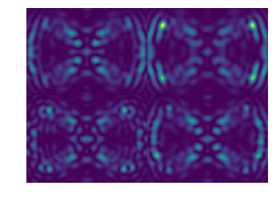

In [34]:
import numpy as np
from astropy.io import fits
%pylab inline --no-import-all
matplotlib.rcParams['image.origin'] = 'lower'
matplotlib.rcParams['image.interpolation'] = 'nearest'
cmap='viridis'
Populating the interactive namespace from numpy and matplotlib
In [35]:
%ls
1E-7/ OS5_SIM_2.0_t10000/
1E-8/ OS5_SIM_2.0_t2000/
5E-7/ PISCES/
5E-8/ Starcam_Right_Mask.ipynb
BB_red_lstsq.fits Traps/
BB_red_lstsq_resid.fits WFIRST/
Calibra_170407_data/ charis-dep/
ConstructFITSImagesForVideos.ipynb charis-dep_old/
Detector-traps/ charis_data/
Flat637_red_lstsq.fits crispy/
Flat637_red_lstsq_resid.fits oldTraps/
IFS-Simulator2/ quicklook/
IFS-postprocess/ quicklook_old/
Non-telecentric/ test.aux*
OS5/ test.log*
OS5_RDI_660_1.6/ test.pdf*
OS5_RDI_660_1.8/ test.synctex.gz*
OS5_RDI_660_2.0/ test.tex*
OS5_RDI_660_2.2/ webbpsf/
OS5_SIM_2.0_noiseless/ webbpsf-data/
OS5_SIM_2.0_t1000/ webbpsf-old/
In [36]:
folder = 'OS5/target_only/'
In [37]:
import glob
files = glob.glob(folder+"*")
print len(files)
100
In [38]:
first = fits.getdata(files[0])
print first.shape
cutY = 80
cutX = 50
slicenum = 5
firstcropped = first[slicenum,cutY:-cutY,cutX:-cutX]
(45, 315, 315)
In [39]:
plt.imshow(firstcropped)
plt.axis('off')
Out[39]:
(-0.5, 214.5, -0.5, 154.5)

In [40]:
a,b = firstcropped.shape
print a,b
155 215
In [41]:
img = np.zeros((2*a,2*b))
img[:a,:b] = firstcropped
img[:a,b:] = first[15,cutY:-cutY,cutX:-cutX]
img[a:,:b] = first[25,cutY:-cutY,cutX:-cutX]
img[a:,b:] = first[35,cutY:-cutY,cutX:-cutX]
In [42]:
plt.imshow(img)
plt.axis('off')
Out[42]:
(-0.5, 429.5, -0.5, 309.5)

In [43]:
out = fits.HDUList(fits.PrimaryHDU(img))
out.writeto('OS5/output_video/test.fits')
In [47]:
for i in range(len(files)):
f = files[i]
print f
# create new array
img = np.zeros((2*a,2*b))
data = fits.getdata(f)
img[:a,:b] = data[5,cutY:-cutY,cutX:-cutX]
img[:a,b:] = data[15,cutY:-cutY,cutX:-cutX]
img[a:,:b] = data[25,cutY:-cutY,cutX:-cutX]
img[a:,b:] = data[35,cutY:-cutY,cutX:-cutX]
out = fits.HDUList(fits.PrimaryHDU(img))
out.writeto('OS5/output_video/video_%d.fits' % i,clobber=True)
OS5/target_only/os5_spc_031.fits
OS5/target_only/os5_spc_032.fits
OS5/target_only/os5_spc_033.fits
OS5/target_only/os5_spc_034.fits
OS5/target_only/os5_spc_035.fits
OS5/target_only/os5_spc_036.fits
OS5/target_only/os5_spc_037.fits
OS5/target_only/os5_spc_038.fits
OS5/target_only/os5_spc_039.fits
OS5/target_only/os5_spc_040.fits
OS5/target_only/os5_spc_041.fits
OS5/target_only/os5_spc_042.fits
OS5/target_only/os5_spc_043.fits
OS5/target_only/os5_spc_044.fits
OS5/target_only/os5_spc_045.fits
OS5/target_only/os5_spc_046.fits
OS5/target_only/os5_spc_047.fits
OS5/target_only/os5_spc_048.fits
OS5/target_only/os5_spc_049.fits
OS5/target_only/os5_spc_050.fits
OS5/target_only/os5_spc_051.fits
OS5/target_only/os5_spc_052.fits
OS5/target_only/os5_spc_053.fits
OS5/target_only/os5_spc_054.fits
OS5/target_only/os5_spc_055.fits
OS5/target_only/os5_spc_056.fits
OS5/target_only/os5_spc_057.fits
OS5/target_only/os5_spc_058.fits
OS5/target_only/os5_spc_059.fits
OS5/target_only/os5_spc_060.fits
OS5/target_only/os5_spc_061.fits
OS5/target_only/os5_spc_062.fits
OS5/target_only/os5_spc_063.fits
OS5/target_only/os5_spc_064.fits
OS5/target_only/os5_spc_065.fits
OS5/target_only/os5_spc_066.fits
OS5/target_only/os5_spc_067.fits
OS5/target_only/os5_spc_068.fits
OS5/target_only/os5_spc_069.fits
OS5/target_only/os5_spc_070.fits
OS5/target_only/os5_spc_071.fits
OS5/target_only/os5_spc_072.fits
OS5/target_only/os5_spc_073.fits
OS5/target_only/os5_spc_074.fits
OS5/target_only/os5_spc_075.fits
OS5/target_only/os5_spc_076.fits
OS5/target_only/os5_spc_077.fits
OS5/target_only/os5_spc_078.fits
OS5/target_only/os5_spc_079.fits
OS5/target_only/os5_spc_080.fits
OS5/target_only/os5_spc_081.fits
OS5/target_only/os5_spc_082.fits
OS5/target_only/os5_spc_083.fits
OS5/target_only/os5_spc_084.fits
OS5/target_only/os5_spc_085.fits
OS5/target_only/os5_spc_086.fits
OS5/target_only/os5_spc_087.fits
OS5/target_only/os5_spc_088.fits
OS5/target_only/os5_spc_089.fits
OS5/target_only/os5_spc_090.fits
OS5/target_only/os5_spc_091.fits
OS5/target_only/os5_spc_092.fits
OS5/target_only/os5_spc_093.fits
OS5/target_only/os5_spc_094.fits
OS5/target_only/os5_spc_095.fits
OS5/target_only/os5_spc_096.fits
OS5/target_only/os5_spc_097.fits
OS5/target_only/os5_spc_098.fits
OS5/target_only/os5_spc_099.fits
OS5/target_only/os5_spc_100.fits
OS5/target_only/os5_spc_101.fits
OS5/target_only/os5_spc_102.fits
OS5/target_only/os5_spc_103.fits
OS5/target_only/os5_spc_104.fits
OS5/target_only/os5_spc_105.fits
OS5/target_only/os5_spc_106.fits
OS5/target_only/os5_spc_107.fits
OS5/target_only/os5_spc_108.fits
OS5/target_only/os5_spc_109.fits
OS5/target_only/os5_spc_110.fits
OS5/target_only/os5_spc_111.fits
OS5/target_only/os5_spc_112.fits
OS5/target_only/os5_spc_113.fits
OS5/target_only/os5_spc_114.fits
OS5/target_only/os5_spc_115.fits
OS5/target_only/os5_spc_116.fits
OS5/target_only/os5_spc_117.fits
OS5/target_only/os5_spc_118.fits
OS5/target_only/os5_spc_119.fits
OS5/target_only/os5_spc_120.fits
OS5/target_only/os5_spc_121.fits
OS5/target_only/os5_spc_122.fits
OS5/target_only/os5_spc_123.fits
OS5/target_only/os5_spc_124.fits
OS5/target_only/os5_spc_125.fits
OS5/target_only/os5_spc_126.fits
OS5/target_only/os5_spc_127.fits
OS5/target_only/os5_spc_128.fits
OS5/target_only/os5_spc_129.fits
OS5/target_only/os5_spc_130.fits
In [50]:
arr = 660.*np.linspace(1.-0.18/2.,1.+0.18/2.,45)
In [51]:
arr[5],arr[15],arr[25],arr[35]
Out[51]:
(614.10000000000002,
641.10000000000002,
668.10000000000014,
695.10000000000002)
Video of integrated IFS map¶
In [76]:
import sys
folder = 'crispy'
print(folder)
if folder not in sys.path: sys.path.append(folder)
from crispy.params import Params
folder = 'crispy/crispy'
par = Params(folder)
crispy
In [77]:
par.hdr
Out[77]:
SIMPLE = T / conforms to FITS standard
BITPIX = 8 / array data type
NAXIS = 0 / number of array dimensions
EXTEND = T
COMMENT
COMMENT ************************************************************
COMMENT ********************** General parameters ******************
COMMENT ************************************************************
COMMENT
NLENS = 108 / # lenslets across array
PITCH = 0.000174 / Lenslet pitch (meters)
INTERLAC= 2 / Interlacing
PHILENS = 26.56505117707799 / Rotation angle of the lenslets (deg)
PIXSIZE = 1.3E-05 / Pixel size (meters)
LENSAMP = 0.5 / Lenslet sampling (lam/D)
LSAMPWAV= 660.0 / Lenslet sampling wavelength (nm)
FWHM = 2 / FHWM of PSFLet at detector (pixels)
FWHMLAM = 660.0 / Wavelength at which FWHM is defined (nm)
NPIX = 1024 / Number of detector pixels
DISPDIST= F / Use PISCES distortion/dispersion?
In [78]:
from crispy.tools.detector import readDetector
from crispy.tools.image import Image
from crispy.IFS import reduceIFSMap
par.nonoise=False
sampling=2.0
par.timeframe=1000
par.Nreads = par.timeframe/300
par.PCmode=True
# par.EMStats=True
# par.poisson=True
# par.RN=0.0
# par.PCbias=0.0
# par.EMGain = 200.0
# par.lifefraction = 0.0
par.lenslet_sampling=1./sampling
folder = '/Users/mrizzo/IFS/OS5_SIM_'+str(sampling)+'_t'+str(int(par.timeframe))
In [79]:
rateFiles = glob.glob(folder+"/*.fits")[30:]
print len(rateFiles)
100
In [81]:
outmap = np.zeros((1024,1024))
# load offaxis map
offaxis = fits.getdata(folder+'/average/offaxis_planet.fits')
inttime = par.timeframe/par.Nreads
print inttime
s = 0
trim=30
for i in range(len(rateFiles)):
rateFile = rateFiles[i]
img = Image(rateFile)
img.data += offaxis
for j in range(par.Nreads):
outmap += readDetector(par,img,inttime=inttime)
s += 1
red = reduceIFSMap(par,outmap/np.float(s),smoothbad=False)
# out = fits.HDUList(fits.PrimaryHDU(outmap/np.float(s)))
# out.writeto('OS5/output_video/ramp_%d.fits' % i, clobber=True)
c,d = red.data[1,trim:-trim,trim:-trim].shape
outIFS = np.zeros((2*c,2*d))
outIFS[:c,:d] = red.data[1,trim:-trim,trim:-trim]
outIFS[:c,d:] = red.data[6,trim:-trim,trim:-trim]
outIFS[c:,:d] = red.data[11,trim:-trim,trim:-trim]
outIFS[c:,d:] = red.data[-4,trim:-trim,trim:-trim]
out = fits.HDUList(fits.PrimaryHDU(outIFS))
out.writeto('OS5/output_video/rampIFS_%d.fits' % i, clobber=True)
333
crispy - INFO - Read data from HDU 1 of /Users/mrizzo/IFS/OS5_SIM_2.0_t1000/os5_spc_031_targetstar_IFS.fits
crispy - INFO - Reduced cube will have 19 wavelength bins
crispy - INFO - Writing data to crispy/crispy/SimResults/20170622-173545_red_optext.fits
crispy - INFO - Elapsed time: 1.249526s
crispy - INFO - Read data from HDU 1 of /Users/mrizzo/IFS/OS5_SIM_2.0_t1000/os5_spc_032_targetstar_IFS.fits
crispy - INFO - Reduced cube will have 19 wavelength bins
crispy - INFO - Writing data to crispy/crispy/SimResults/20170622-173547_red_optext.fits
crispy - INFO - Elapsed time: 1.235427s
crispy - INFO - Read data from HDU 1 of /Users/mrizzo/IFS/OS5_SIM_2.0_t1000/os5_spc_033_targetstar_IFS.fits
crispy - INFO - Reduced cube will have 19 wavelength bins
crispy - INFO - Writing data to crispy/crispy/SimResults/20170622-173548_red_optext.fits
crispy - INFO - Elapsed time: 1.227653s
crispy - INFO - Read data from HDU 1 of /Users/mrizzo/IFS/OS5_SIM_2.0_t1000/os5_spc_034_targetstar_IFS.fits
crispy - INFO - Reduced cube will have 19 wavelength bins
crispy - INFO - Writing data to crispy/crispy/SimResults/20170622-173550_red_optext.fits
crispy - INFO - Elapsed time: 1.204931s
crispy - INFO - Read data from HDU 1 of /Users/mrizzo/IFS/OS5_SIM_2.0_t1000/os5_spc_035_targetstar_IFS.fits
crispy - INFO - Reduced cube will have 19 wavelength bins
crispy - INFO - Writing data to crispy/crispy/SimResults/20170622-173552_red_optext.fits
crispy - INFO - Elapsed time: 1.221042s
crispy - INFO - Read data from HDU 1 of /Users/mrizzo/IFS/OS5_SIM_2.0_t1000/os5_spc_036_targetstar_IFS.fits
crispy - INFO - Reduced cube will have 19 wavelength bins
crispy - INFO - Writing data to crispy/crispy/SimResults/20170622-173553_red_optext.fits
crispy - INFO - Elapsed time: 1.221005s
crispy - INFO - Read data from HDU 1 of /Users/mrizzo/IFS/OS5_SIM_2.0_t1000/os5_spc_037_targetstar_IFS.fits
crispy - INFO - Reduced cube will have 19 wavelength bins
crispy - INFO - Writing data to crispy/crispy/SimResults/20170622-173555_red_optext.fits
crispy - INFO - Elapsed time: 1.232999s
crispy - INFO - Read data from HDU 1 of /Users/mrizzo/IFS/OS5_SIM_2.0_t1000/os5_spc_038_targetstar_IFS.fits
crispy - INFO - Reduced cube will have 19 wavelength bins
crispy - INFO - Writing data to crispy/crispy/SimResults/20170622-173557_red_optext.fits
crispy - INFO - Elapsed time: 1.209659s
crispy - INFO - Read data from HDU 1 of /Users/mrizzo/IFS/OS5_SIM_2.0_t1000/os5_spc_039_targetstar_IFS.fits
crispy - INFO - Reduced cube will have 19 wavelength bins
crispy - INFO - Writing data to crispy/crispy/SimResults/20170622-173558_red_optext.fits
crispy - INFO - Elapsed time: 1.226163s
crispy - INFO - Read data from HDU 1 of /Users/mrizzo/IFS/OS5_SIM_2.0_t1000/os5_spc_040_targetstar_IFS.fits
crispy - INFO - Reduced cube will have 19 wavelength bins
crispy - INFO - Writing data to crispy/crispy/SimResults/20170622-173600_red_optext.fits
crispy - INFO - Elapsed time: 1.237980s
crispy - INFO - Read data from HDU 1 of /Users/mrizzo/IFS/OS5_SIM_2.0_t1000/os5_spc_041_targetstar_IFS.fits
crispy - INFO - Reduced cube will have 19 wavelength bins
crispy - INFO - Writing data to crispy/crispy/SimResults/20170622-173601_red_optext.fits
crispy - INFO - Elapsed time: 1.221281s
crispy - INFO - Read data from HDU 1 of /Users/mrizzo/IFS/OS5_SIM_2.0_t1000/os5_spc_042_targetstar_IFS.fits
crispy - INFO - Reduced cube will have 19 wavelength bins
crispy - INFO - Writing data to crispy/crispy/SimResults/20170622-173603_red_optext.fits
crispy - INFO - Elapsed time: 1.195610s
crispy - INFO - Read data from HDU 1 of /Users/mrizzo/IFS/OS5_SIM_2.0_t1000/os5_spc_043_targetstar_IFS.fits
crispy - INFO - Reduced cube will have 19 wavelength bins
crispy - INFO - Writing data to crispy/crispy/SimResults/20170622-173605_red_optext.fits
crispy - INFO - Elapsed time: 1.208498s
crispy - INFO - Read data from HDU 1 of /Users/mrizzo/IFS/OS5_SIM_2.0_t1000/os5_spc_044_targetstar_IFS.fits
crispy - INFO - Reduced cube will have 19 wavelength bins
crispy - INFO - Writing data to crispy/crispy/SimResults/20170622-173606_red_optext.fits
crispy - INFO - Elapsed time: 1.222469s
crispy - INFO - Read data from HDU 1 of /Users/mrizzo/IFS/OS5_SIM_2.0_t1000/os5_spc_045_targetstar_IFS.fits
crispy - INFO - Reduced cube will have 19 wavelength bins
crispy - INFO - Writing data to crispy/crispy/SimResults/20170622-173608_red_optext.fits
crispy - INFO - Elapsed time: 1.219150s
crispy - INFO - Read data from HDU 1 of /Users/mrizzo/IFS/OS5_SIM_2.0_t1000/os5_spc_046_targetstar_IFS.fits
crispy - INFO - Reduced cube will have 19 wavelength bins
crispy - INFO - Writing data to crispy/crispy/SimResults/20170622-173610_red_optext.fits
crispy - INFO - Elapsed time: 1.211239s
crispy - INFO - Read data from HDU 1 of /Users/mrizzo/IFS/OS5_SIM_2.0_t1000/os5_spc_047_targetstar_IFS.fits
crispy - INFO - Reduced cube will have 19 wavelength bins
crispy - INFO - Writing data to crispy/crispy/SimResults/20170622-173611_red_optext.fits
crispy - INFO - Elapsed time: 1.227833s
crispy - INFO - Read data from HDU 1 of /Users/mrizzo/IFS/OS5_SIM_2.0_t1000/os5_spc_048_targetstar_IFS.fits
crispy - INFO - Reduced cube will have 19 wavelength bins
crispy - INFO - Writing data to crispy/crispy/SimResults/20170622-173613_red_optext.fits
crispy - INFO - Elapsed time: 1.224047s
crispy - INFO - Read data from HDU 1 of /Users/mrizzo/IFS/OS5_SIM_2.0_t1000/os5_spc_049_targetstar_IFS.fits
crispy - INFO - Reduced cube will have 19 wavelength bins
crispy - INFO - Writing data to crispy/crispy/SimResults/20170622-173614_red_optext.fits
crispy - INFO - Elapsed time: 1.219973s
crispy - INFO - Read data from HDU 1 of /Users/mrizzo/IFS/OS5_SIM_2.0_t1000/os5_spc_050_targetstar_IFS.fits
crispy - INFO - Reduced cube will have 19 wavelength bins
crispy - INFO - Writing data to crispy/crispy/SimResults/20170622-173616_red_optext.fits
crispy - INFO - Elapsed time: 1.210986s
crispy - INFO - Read data from HDU 1 of /Users/mrizzo/IFS/OS5_SIM_2.0_t1000/os5_spc_051_targetstar_IFS.fits
crispy - INFO - Reduced cube will have 19 wavelength bins
crispy - INFO - Writing data to crispy/crispy/SimResults/20170622-173618_red_optext.fits
crispy - INFO - Elapsed time: 1.196800s
crispy - INFO - Read data from HDU 1 of /Users/mrizzo/IFS/OS5_SIM_2.0_t1000/os5_spc_052_targetstar_IFS.fits
crispy - INFO - Reduced cube will have 19 wavelength bins
crispy - INFO - Writing data to crispy/crispy/SimResults/20170622-173619_red_optext.fits
crispy - INFO - Elapsed time: 1.201298s
crispy - INFO - Read data from HDU 1 of /Users/mrizzo/IFS/OS5_SIM_2.0_t1000/os5_spc_053_targetstar_IFS.fits
crispy - INFO - Reduced cube will have 19 wavelength bins
crispy - INFO - Writing data to crispy/crispy/SimResults/20170622-173621_red_optext.fits
crispy - INFO - Elapsed time: 1.198582s
crispy - INFO - Read data from HDU 1 of /Users/mrizzo/IFS/OS5_SIM_2.0_t1000/os5_spc_054_targetstar_IFS.fits
crispy - INFO - Reduced cube will have 19 wavelength bins
crispy - INFO - Writing data to crispy/crispy/SimResults/20170622-173622_red_optext.fits
crispy - INFO - Elapsed time: 1.217044s
crispy - INFO - Read data from HDU 1 of /Users/mrizzo/IFS/OS5_SIM_2.0_t1000/os5_spc_055_targetstar_IFS.fits
crispy - INFO - Reduced cube will have 19 wavelength bins
crispy - INFO - Writing data to crispy/crispy/SimResults/20170622-173624_red_optext.fits
crispy - INFO - Elapsed time: 1.178913s
crispy - INFO - Read data from HDU 1 of /Users/mrizzo/IFS/OS5_SIM_2.0_t1000/os5_spc_056_targetstar_IFS.fits
crispy - INFO - Reduced cube will have 19 wavelength bins
crispy - INFO - Writing data to crispy/crispy/SimResults/20170622-173626_red_optext.fits
crispy - INFO - Elapsed time: 1.193927s
crispy - INFO - Read data from HDU 1 of /Users/mrizzo/IFS/OS5_SIM_2.0_t1000/os5_spc_057_targetstar_IFS.fits
crispy - INFO - Reduced cube will have 19 wavelength bins
crispy - INFO - Writing data to crispy/crispy/SimResults/20170622-173627_red_optext.fits
crispy - INFO - Elapsed time: 1.199928s
crispy - INFO - Read data from HDU 1 of /Users/mrizzo/IFS/OS5_SIM_2.0_t1000/os5_spc_058_targetstar_IFS.fits
crispy - INFO - Reduced cube will have 19 wavelength bins
crispy - INFO - Writing data to crispy/crispy/SimResults/20170622-173629_red_optext.fits
crispy - INFO - Elapsed time: 1.199256s
crispy - INFO - Read data from HDU 1 of /Users/mrizzo/IFS/OS5_SIM_2.0_t1000/os5_spc_059_targetstar_IFS.fits
crispy - INFO - Reduced cube will have 19 wavelength bins
crispy - INFO - Writing data to crispy/crispy/SimResults/20170622-173630_red_optext.fits
crispy - INFO - Elapsed time: 1.196530s
crispy - INFO - Read data from HDU 1 of /Users/mrizzo/IFS/OS5_SIM_2.0_t1000/os5_spc_060_targetstar_IFS.fits
crispy - INFO - Reduced cube will have 19 wavelength bins
crispy - INFO - Writing data to crispy/crispy/SimResults/20170622-173632_red_optext.fits
crispy - INFO - Elapsed time: 1.258117s
crispy - INFO - Read data from HDU 1 of /Users/mrizzo/IFS/OS5_SIM_2.0_t1000/os5_spc_061_targetstar_IFS.fits
crispy - INFO - Reduced cube will have 19 wavelength bins
crispy - INFO - Writing data to crispy/crispy/SimResults/20170622-173634_red_optext.fits
crispy - INFO - Elapsed time: 1.194863s
crispy - INFO - Read data from HDU 1 of /Users/mrizzo/IFS/OS5_SIM_2.0_t1000/os5_spc_062_targetstar_IFS.fits
crispy - INFO - Reduced cube will have 19 wavelength bins
crispy - INFO - Writing data to crispy/crispy/SimResults/20170622-173635_red_optext.fits
crispy - INFO - Elapsed time: 1.226027s
crispy - INFO - Read data from HDU 1 of /Users/mrizzo/IFS/OS5_SIM_2.0_t1000/os5_spc_063_targetstar_IFS.fits
crispy - INFO - Reduced cube will have 19 wavelength bins
crispy - INFO - Writing data to crispy/crispy/SimResults/20170622-173637_red_optext.fits
crispy - INFO - Elapsed time: 1.214374s
crispy - INFO - Read data from HDU 1 of /Users/mrizzo/IFS/OS5_SIM_2.0_t1000/os5_spc_064_targetstar_IFS.fits
crispy - INFO - Reduced cube will have 19 wavelength bins
crispy - INFO - Writing data to crispy/crispy/SimResults/20170622-173638_red_optext.fits
crispy - INFO - Elapsed time: 1.193586s
crispy - INFO - Read data from HDU 1 of /Users/mrizzo/IFS/OS5_SIM_2.0_t1000/os5_spc_065_targetstar_IFS.fits
crispy - INFO - Reduced cube will have 19 wavelength bins
crispy - INFO - Writing data to crispy/crispy/SimResults/20170622-173640_red_optext.fits
crispy - INFO - Elapsed time: 1.194699s
crispy - INFO - Read data from HDU 1 of /Users/mrizzo/IFS/OS5_SIM_2.0_t1000/os5_spc_066_targetstar_IFS.fits
crispy - INFO - Reduced cube will have 19 wavelength bins
crispy - INFO - Writing data to crispy/crispy/SimResults/20170622-173642_red_optext.fits
crispy - INFO - Elapsed time: 1.206993s
crispy - INFO - Read data from HDU 1 of /Users/mrizzo/IFS/OS5_SIM_2.0_t1000/os5_spc_067_targetstar_IFS.fits
crispy - INFO - Reduced cube will have 19 wavelength bins
crispy - INFO - Writing data to crispy/crispy/SimResults/20170622-173643_red_optext.fits
crispy - INFO - Elapsed time: 1.197841s
crispy - INFO - Read data from HDU 1 of /Users/mrizzo/IFS/OS5_SIM_2.0_t1000/os5_spc_068_targetstar_IFS.fits
crispy - INFO - Reduced cube will have 19 wavelength bins
crispy - INFO - Writing data to crispy/crispy/SimResults/20170622-173645_red_optext.fits
crispy - INFO - Elapsed time: 1.194860s
crispy - INFO - Read data from HDU 1 of /Users/mrizzo/IFS/OS5_SIM_2.0_t1000/os5_spc_069_targetstar_IFS.fits
crispy - INFO - Reduced cube will have 19 wavelength bins
crispy - INFO - Writing data to crispy/crispy/SimResults/20170622-173646_red_optext.fits
crispy - INFO - Elapsed time: 1.170992s
crispy - INFO - Read data from HDU 1 of /Users/mrizzo/IFS/OS5_SIM_2.0_t1000/os5_spc_070_targetstar_IFS.fits
crispy - INFO - Reduced cube will have 19 wavelength bins
crispy - INFO - Writing data to crispy/crispy/SimResults/20170622-173648_red_optext.fits
crispy - INFO - Elapsed time: 1.208594s
crispy - INFO - Read data from HDU 1 of /Users/mrizzo/IFS/OS5_SIM_2.0_t1000/os5_spc_071_targetstar_IFS.fits
crispy - INFO - Reduced cube will have 19 wavelength bins
crispy - INFO - Writing data to crispy/crispy/SimResults/20170622-173649_red_optext.fits
crispy - INFO - Elapsed time: 1.214176s
crispy - INFO - Read data from HDU 1 of /Users/mrizzo/IFS/OS5_SIM_2.0_t1000/os5_spc_072_targetstar_IFS.fits
crispy - INFO - Reduced cube will have 19 wavelength bins
crispy - INFO - Writing data to crispy/crispy/SimResults/20170622-173651_red_optext.fits
crispy - INFO - Elapsed time: 1.190106s
crispy - INFO - Read data from HDU 1 of /Users/mrizzo/IFS/OS5_SIM_2.0_t1000/os5_spc_073_targetstar_IFS.fits
crispy - INFO - Reduced cube will have 19 wavelength bins
crispy - INFO - Writing data to crispy/crispy/SimResults/20170622-173653_red_optext.fits
crispy - INFO - Elapsed time: 1.214170s
crispy - INFO - Read data from HDU 1 of /Users/mrizzo/IFS/OS5_SIM_2.0_t1000/os5_spc_074_targetstar_IFS.fits
crispy - INFO - Reduced cube will have 19 wavelength bins
crispy - INFO - Writing data to crispy/crispy/SimResults/20170622-173654_red_optext.fits
crispy - INFO - Elapsed time: 1.188591s
crispy - INFO - Read data from HDU 1 of /Users/mrizzo/IFS/OS5_SIM_2.0_t1000/os5_spc_075_targetstar_IFS.fits
crispy - INFO - Reduced cube will have 19 wavelength bins
crispy - INFO - Writing data to crispy/crispy/SimResults/20170622-173656_red_optext.fits
crispy - INFO - Elapsed time: 1.190998s
crispy - INFO - Read data from HDU 1 of /Users/mrizzo/IFS/OS5_SIM_2.0_t1000/os5_spc_076_targetstar_IFS.fits
crispy - INFO - Reduced cube will have 19 wavelength bins
crispy - INFO - Writing data to crispy/crispy/SimResults/20170622-173657_red_optext.fits
crispy - INFO - Elapsed time: 1.200569s
crispy - INFO - Read data from HDU 1 of /Users/mrizzo/IFS/OS5_SIM_2.0_t1000/os5_spc_077_targetstar_IFS.fits
crispy - INFO - Reduced cube will have 19 wavelength bins
crispy - INFO - Writing data to crispy/crispy/SimResults/20170622-173659_red_optext.fits
crispy - INFO - Elapsed time: 1.195562s
crispy - INFO - Read data from HDU 1 of /Users/mrizzo/IFS/OS5_SIM_2.0_t1000/os5_spc_078_targetstar_IFS.fits
crispy - INFO - Reduced cube will have 19 wavelength bins
crispy - INFO - Writing data to crispy/crispy/SimResults/20170622-173700_red_optext.fits
crispy - INFO - Elapsed time: 1.193767s
crispy - INFO - Read data from HDU 1 of /Users/mrizzo/IFS/OS5_SIM_2.0_t1000/os5_spc_079_targetstar_IFS.fits
crispy - INFO - Reduced cube will have 19 wavelength bins
crispy - INFO - Writing data to crispy/crispy/SimResults/20170622-173702_red_optext.fits
crispy - INFO - Elapsed time: 1.223704s
crispy - INFO - Read data from HDU 1 of /Users/mrizzo/IFS/OS5_SIM_2.0_t1000/os5_spc_080_targetstar_IFS.fits
crispy - INFO - Reduced cube will have 19 wavelength bins
crispy - INFO - Writing data to crispy/crispy/SimResults/20170622-173704_red_optext.fits
crispy - INFO - Elapsed time: 1.209242s
crispy - INFO - Read data from HDU 1 of /Users/mrizzo/IFS/OS5_SIM_2.0_t1000/os5_spc_081_targetstar_IFS.fits
crispy - INFO - Reduced cube will have 19 wavelength bins
crispy - INFO - Writing data to crispy/crispy/SimResults/20170622-173705_red_optext.fits
crispy - INFO - Elapsed time: 1.201313s
crispy - INFO - Read data from HDU 1 of /Users/mrizzo/IFS/OS5_SIM_2.0_t1000/os5_spc_082_targetstar_IFS.fits
crispy - INFO - Reduced cube will have 19 wavelength bins
crispy - INFO - Writing data to crispy/crispy/SimResults/20170622-173707_red_optext.fits
crispy - INFO - Elapsed time: 1.203178s
crispy - INFO - Read data from HDU 1 of /Users/mrizzo/IFS/OS5_SIM_2.0_t1000/os5_spc_083_targetstar_IFS.fits
crispy - INFO - Reduced cube will have 19 wavelength bins
crispy - INFO - Writing data to crispy/crispy/SimResults/20170622-173708_red_optext.fits
crispy - INFO - Elapsed time: 1.191993s
crispy - INFO - Read data from HDU 1 of /Users/mrizzo/IFS/OS5_SIM_2.0_t1000/os5_spc_084_targetstar_IFS.fits
crispy - INFO - Reduced cube will have 19 wavelength bins
crispy - INFO - Writing data to crispy/crispy/SimResults/20170622-173710_red_optext.fits
crispy - INFO - Elapsed time: 1.198864s
crispy - INFO - Read data from HDU 1 of /Users/mrizzo/IFS/OS5_SIM_2.0_t1000/os5_spc_085_targetstar_IFS.fits
crispy - INFO - Reduced cube will have 19 wavelength bins
crispy - INFO - Writing data to crispy/crispy/SimResults/20170622-173712_red_optext.fits
crispy - INFO - Elapsed time: 1.186231s
crispy - INFO - Read data from HDU 1 of /Users/mrizzo/IFS/OS5_SIM_2.0_t1000/os5_spc_086_targetstar_IFS.fits
crispy - INFO - Reduced cube will have 19 wavelength bins
crispy - INFO - Writing data to crispy/crispy/SimResults/20170622-173713_red_optext.fits
crispy - INFO - Elapsed time: 1.204012s
crispy - INFO - Read data from HDU 1 of /Users/mrizzo/IFS/OS5_SIM_2.0_t1000/os5_spc_087_targetstar_IFS.fits
crispy - INFO - Reduced cube will have 19 wavelength bins
crispy - INFO - Writing data to crispy/crispy/SimResults/20170622-173715_red_optext.fits
crispy - INFO - Elapsed time: 1.193534s
crispy - INFO - Read data from HDU 1 of /Users/mrizzo/IFS/OS5_SIM_2.0_t1000/os5_spc_088_targetstar_IFS.fits
crispy - INFO - Reduced cube will have 19 wavelength bins
crispy - INFO - Writing data to crispy/crispy/SimResults/20170622-173716_red_optext.fits
crispy - INFO - Elapsed time: 1.184603s
crispy - INFO - Read data from HDU 1 of /Users/mrizzo/IFS/OS5_SIM_2.0_t1000/os5_spc_089_targetstar_IFS.fits
crispy - INFO - Reduced cube will have 19 wavelength bins
crispy - INFO - Writing data to crispy/crispy/SimResults/20170622-173718_red_optext.fits
crispy - INFO - Elapsed time: 1.201925s
crispy - INFO - Read data from HDU 1 of /Users/mrizzo/IFS/OS5_SIM_2.0_t1000/os5_spc_090_targetstar_IFS.fits
crispy - INFO - Reduced cube will have 19 wavelength bins
crispy - INFO - Writing data to crispy/crispy/SimResults/20170622-173719_red_optext.fits
crispy - INFO - Elapsed time: 1.199836s
crispy - INFO - Read data from HDU 1 of /Users/mrizzo/IFS/OS5_SIM_2.0_t1000/os5_spc_091_targetstar_IFS.fits
crispy - INFO - Reduced cube will have 19 wavelength bins
crispy - INFO - Writing data to crispy/crispy/SimResults/20170622-173721_red_optext.fits
crispy - INFO - Elapsed time: 1.194957s
crispy - INFO - Read data from HDU 1 of /Users/mrizzo/IFS/OS5_SIM_2.0_t1000/os5_spc_092_targetstar_IFS.fits
crispy - INFO - Reduced cube will have 19 wavelength bins
crispy - INFO - Writing data to crispy/crispy/SimResults/20170622-173723_red_optext.fits
crispy - INFO - Elapsed time: 1.200802s
crispy - INFO - Read data from HDU 1 of /Users/mrizzo/IFS/OS5_SIM_2.0_t1000/os5_spc_093_targetstar_IFS.fits
crispy - INFO - Reduced cube will have 19 wavelength bins
crispy - INFO - Writing data to crispy/crispy/SimResults/20170622-173724_red_optext.fits
crispy - INFO - Elapsed time: 1.207430s
crispy - INFO - Read data from HDU 1 of /Users/mrizzo/IFS/OS5_SIM_2.0_t1000/os5_spc_094_targetstar_IFS.fits
crispy - INFO - Reduced cube will have 19 wavelength bins
crispy - INFO - Writing data to crispy/crispy/SimResults/20170622-173726_red_optext.fits
crispy - INFO - Elapsed time: 1.197039s
crispy - INFO - Read data from HDU 1 of /Users/mrizzo/IFS/OS5_SIM_2.0_t1000/os5_spc_095_targetstar_IFS.fits
crispy - INFO - Reduced cube will have 19 wavelength bins
crispy - INFO - Writing data to crispy/crispy/SimResults/20170622-173727_red_optext.fits
crispy - INFO - Elapsed time: 1.199679s
crispy - INFO - Read data from HDU 1 of /Users/mrizzo/IFS/OS5_SIM_2.0_t1000/os5_spc_096_targetstar_IFS.fits
crispy - INFO - Reduced cube will have 19 wavelength bins
crispy - INFO - Writing data to crispy/crispy/SimResults/20170622-173729_red_optext.fits
crispy - INFO - Elapsed time: 1.216901s
crispy - INFO - Read data from HDU 1 of /Users/mrizzo/IFS/OS5_SIM_2.0_t1000/os5_spc_097_targetstar_IFS.fits
crispy - INFO - Reduced cube will have 19 wavelength bins
crispy - INFO - Writing data to crispy/crispy/SimResults/20170622-173730_red_optext.fits
crispy - INFO - Elapsed time: 1.193140s
crispy - INFO - Read data from HDU 1 of /Users/mrizzo/IFS/OS5_SIM_2.0_t1000/os5_spc_098_targetstar_IFS.fits
crispy - INFO - Reduced cube will have 19 wavelength bins
crispy - INFO - Writing data to crispy/crispy/SimResults/20170622-173732_red_optext.fits
crispy - INFO - Elapsed time: 1.220599s
crispy - INFO - Read data from HDU 1 of /Users/mrizzo/IFS/OS5_SIM_2.0_t1000/os5_spc_099_targetstar_IFS.fits
crispy - INFO - Reduced cube will have 19 wavelength bins
crispy - INFO - Writing data to crispy/crispy/SimResults/20170622-173734_red_optext.fits
crispy - INFO - Elapsed time: 1.199405s
crispy - INFO - Read data from HDU 1 of /Users/mrizzo/IFS/OS5_SIM_2.0_t1000/os5_spc_100_targetstar_IFS.fits
crispy - INFO - Reduced cube will have 19 wavelength bins
crispy - INFO - Writing data to crispy/crispy/SimResults/20170622-173735_red_optext.fits
crispy - INFO - Elapsed time: 1.205272s
crispy - INFO - Read data from HDU 1 of /Users/mrizzo/IFS/OS5_SIM_2.0_t1000/os5_spc_101_targetstar_IFS.fits
crispy - INFO - Reduced cube will have 19 wavelength bins
crispy - INFO - Writing data to crispy/crispy/SimResults/20170622-173737_red_optext.fits
crispy - INFO - Elapsed time: 1.203736s
crispy - INFO - Read data from HDU 1 of /Users/mrizzo/IFS/OS5_SIM_2.0_t1000/os5_spc_102_targetstar_IFS.fits
crispy - INFO - Reduced cube will have 19 wavelength bins
crispy - INFO - Writing data to crispy/crispy/SimResults/20170622-173738_red_optext.fits
crispy - INFO - Elapsed time: 1.228426s
crispy - INFO - Read data from HDU 1 of /Users/mrizzo/IFS/OS5_SIM_2.0_t1000/os5_spc_103_targetstar_IFS.fits
crispy - INFO - Reduced cube will have 19 wavelength bins
crispy - INFO - Writing data to crispy/crispy/SimResults/20170622-173740_red_optext.fits
crispy - INFO - Elapsed time: 1.192586s
crispy - INFO - Read data from HDU 1 of /Users/mrizzo/IFS/OS5_SIM_2.0_t1000/os5_spc_104_targetstar_IFS.fits
crispy - INFO - Reduced cube will have 19 wavelength bins
crispy - INFO - Writing data to crispy/crispy/SimResults/20170622-173742_red_optext.fits
crispy - INFO - Elapsed time: 1.202278s
crispy - INFO - Read data from HDU 1 of /Users/mrizzo/IFS/OS5_SIM_2.0_t1000/os5_spc_105_targetstar_IFS.fits
crispy - INFO - Reduced cube will have 19 wavelength bins
crispy - INFO - Writing data to crispy/crispy/SimResults/20170622-173743_red_optext.fits
crispy - INFO - Elapsed time: 1.182339s
crispy - INFO - Read data from HDU 1 of /Users/mrizzo/IFS/OS5_SIM_2.0_t1000/os5_spc_106_targetstar_IFS.fits
crispy - INFO - Reduced cube will have 19 wavelength bins
crispy - INFO - Writing data to crispy/crispy/SimResults/20170622-173745_red_optext.fits
crispy - INFO - Elapsed time: 1.202911s
crispy - INFO - Read data from HDU 1 of /Users/mrizzo/IFS/OS5_SIM_2.0_t1000/os5_spc_107_targetstar_IFS.fits
crispy - INFO - Reduced cube will have 19 wavelength bins
crispy - INFO - Writing data to crispy/crispy/SimResults/20170622-173746_red_optext.fits
crispy - INFO - Elapsed time: 1.208273s
crispy - INFO - Read data from HDU 1 of /Users/mrizzo/IFS/OS5_SIM_2.0_t1000/os5_spc_108_targetstar_IFS.fits
crispy - INFO - Reduced cube will have 19 wavelength bins
crispy - INFO - Writing data to crispy/crispy/SimResults/20170622-173748_red_optext.fits
crispy - INFO - Elapsed time: 1.199639s
crispy - INFO - Read data from HDU 1 of /Users/mrizzo/IFS/OS5_SIM_2.0_t1000/os5_spc_109_targetstar_IFS.fits
crispy - INFO - Reduced cube will have 19 wavelength bins
crispy - INFO - Writing data to crispy/crispy/SimResults/20170622-173749_red_optext.fits
crispy - INFO - Elapsed time: 1.210433s
crispy - INFO - Read data from HDU 1 of /Users/mrizzo/IFS/OS5_SIM_2.0_t1000/os5_spc_110_targetstar_IFS.fits
crispy - INFO - Reduced cube will have 19 wavelength bins
crispy - INFO - Writing data to crispy/crispy/SimResults/20170622-173751_red_optext.fits
crispy - INFO - Elapsed time: 1.225447s
crispy - INFO - Read data from HDU 1 of /Users/mrizzo/IFS/OS5_SIM_2.0_t1000/os5_spc_111_targetstar_IFS.fits
crispy - INFO - Reduced cube will have 19 wavelength bins
crispy - INFO - Writing data to crispy/crispy/SimResults/20170622-173753_red_optext.fits
crispy - INFO - Elapsed time: 1.193936s
crispy - INFO - Read data from HDU 1 of /Users/mrizzo/IFS/OS5_SIM_2.0_t1000/os5_spc_112_targetstar_IFS.fits
crispy - INFO - Reduced cube will have 19 wavelength bins
crispy - INFO - Writing data to crispy/crispy/SimResults/20170622-173754_red_optext.fits
crispy - INFO - Elapsed time: 1.194277s
crispy - INFO - Read data from HDU 1 of /Users/mrizzo/IFS/OS5_SIM_2.0_t1000/os5_spc_113_targetstar_IFS.fits
crispy - INFO - Reduced cube will have 19 wavelength bins
crispy - INFO - Writing data to crispy/crispy/SimResults/20170622-173756_red_optext.fits
crispy - INFO - Elapsed time: 1.209118s
crispy - INFO - Read data from HDU 1 of /Users/mrizzo/IFS/OS5_SIM_2.0_t1000/os5_spc_114_targetstar_IFS.fits
crispy - INFO - Reduced cube will have 19 wavelength bins
crispy - INFO - Writing data to crispy/crispy/SimResults/20170622-173757_red_optext.fits
crispy - INFO - Elapsed time: 1.190978s
crispy - INFO - Read data from HDU 1 of /Users/mrizzo/IFS/OS5_SIM_2.0_t1000/os5_spc_115_targetstar_IFS.fits
crispy - INFO - Reduced cube will have 19 wavelength bins
crispy - INFO - Writing data to crispy/crispy/SimResults/20170622-173759_red_optext.fits
crispy - INFO - Elapsed time: 1.218555s
crispy - INFO - Read data from HDU 1 of /Users/mrizzo/IFS/OS5_SIM_2.0_t1000/os5_spc_116_targetstar_IFS.fits
crispy - INFO - Reduced cube will have 19 wavelength bins
crispy - INFO - Writing data to crispy/crispy/SimResults/20170622-173801_red_optext.fits
crispy - INFO - Elapsed time: 1.215268s
crispy - INFO - Read data from HDU 1 of /Users/mrizzo/IFS/OS5_SIM_2.0_t1000/os5_spc_117_targetstar_IFS.fits
crispy - INFO - Reduced cube will have 19 wavelength bins
crispy - INFO - Writing data to crispy/crispy/SimResults/20170622-173802_red_optext.fits
crispy - INFO - Elapsed time: 1.209497s
crispy - INFO - Read data from HDU 1 of /Users/mrizzo/IFS/OS5_SIM_2.0_t1000/os5_spc_118_targetstar_IFS.fits
crispy - INFO - Reduced cube will have 19 wavelength bins
crispy - INFO - Writing data to crispy/crispy/SimResults/20170622-173804_red_optext.fits
crispy - INFO - Elapsed time: 1.201546s
crispy - INFO - Read data from HDU 1 of /Users/mrizzo/IFS/OS5_SIM_2.0_t1000/os5_spc_119_targetstar_IFS.fits
crispy - INFO - Reduced cube will have 19 wavelength bins
crispy - INFO - Writing data to crispy/crispy/SimResults/20170622-173805_red_optext.fits
crispy - INFO - Elapsed time: 1.192516s
crispy - INFO - Read data from HDU 1 of /Users/mrizzo/IFS/OS5_SIM_2.0_t1000/os5_spc_120_targetstar_IFS.fits
crispy - INFO - Reduced cube will have 19 wavelength bins
crispy - INFO - Writing data to crispy/crispy/SimResults/20170622-173807_red_optext.fits
crispy - INFO - Elapsed time: 1.186004s
crispy - INFO - Read data from HDU 1 of /Users/mrizzo/IFS/OS5_SIM_2.0_t1000/os5_spc_121_targetstar_IFS.fits
crispy - INFO - Reduced cube will have 19 wavelength bins
crispy - INFO - Writing data to crispy/crispy/SimResults/20170622-173808_red_optext.fits
crispy - INFO - Elapsed time: 1.207169s
crispy - INFO - Read data from HDU 1 of /Users/mrizzo/IFS/OS5_SIM_2.0_t1000/os5_spc_122_targetstar_IFS.fits
crispy - INFO - Reduced cube will have 19 wavelength bins
crispy - INFO - Writing data to crispy/crispy/SimResults/20170622-173810_red_optext.fits
crispy - INFO - Elapsed time: 1.190031s
crispy - INFO - Read data from HDU 1 of /Users/mrizzo/IFS/OS5_SIM_2.0_t1000/os5_spc_123_targetstar_IFS.fits
crispy - INFO - Reduced cube will have 19 wavelength bins
crispy - INFO - Writing data to crispy/crispy/SimResults/20170622-173812_red_optext.fits
crispy - INFO - Elapsed time: 1.206876s
crispy - INFO - Read data from HDU 1 of /Users/mrizzo/IFS/OS5_SIM_2.0_t1000/os5_spc_124_targetstar_IFS.fits
crispy - INFO - Reduced cube will have 19 wavelength bins
crispy - INFO - Writing data to crispy/crispy/SimResults/20170622-173813_red_optext.fits
crispy - INFO - Elapsed time: 1.202061s
crispy - INFO - Read data from HDU 1 of /Users/mrizzo/IFS/OS5_SIM_2.0_t1000/os5_spc_125_targetstar_IFS.fits
crispy - INFO - Reduced cube will have 19 wavelength bins
crispy - INFO - Writing data to crispy/crispy/SimResults/20170622-173815_red_optext.fits
crispy - INFO - Elapsed time: 1.192725s
crispy - INFO - Read data from HDU 1 of /Users/mrizzo/IFS/OS5_SIM_2.0_t1000/os5_spc_126_targetstar_IFS.fits
crispy - INFO - Reduced cube will have 19 wavelength bins
crispy - INFO - Writing data to crispy/crispy/SimResults/20170622-173816_red_optext.fits
crispy - INFO - Elapsed time: 1.195313s
crispy - INFO - Read data from HDU 1 of /Users/mrizzo/IFS/OS5_SIM_2.0_t1000/os5_spc_127_targetstar_IFS.fits
crispy - INFO - Reduced cube will have 19 wavelength bins
crispy - INFO - Writing data to crispy/crispy/SimResults/20170622-173818_red_optext.fits
crispy - INFO - Elapsed time: 1.200847s
crispy - INFO - Read data from HDU 1 of /Users/mrizzo/IFS/OS5_SIM_2.0_t1000/os5_spc_128_targetstar_IFS.fits
crispy - INFO - Reduced cube will have 19 wavelength bins
crispy - INFO - Writing data to crispy/crispy/SimResults/20170622-173820_red_optext.fits
crispy - INFO - Elapsed time: 1.190426s
crispy - INFO - Read data from HDU 1 of /Users/mrizzo/IFS/OS5_SIM_2.0_t1000/os5_spc_129_targetstar_IFS.fits
crispy - INFO - Reduced cube will have 19 wavelength bins
crispy - INFO - Writing data to crispy/crispy/SimResults/20170622-173821_red_optext.fits
crispy - INFO - Elapsed time: 1.195775s
crispy - INFO - Read data from HDU 1 of /Users/mrizzo/IFS/OS5_SIM_2.0_t1000/os5_spc_130_targetstar_IFS.fits
crispy - INFO - Reduced cube will have 19 wavelength bins
crispy - INFO - Writing data to crispy/crispy/SimResults/20170622-173823_red_optext.fits
crispy - INFO - Elapsed time: 1.199972s
In [82]:
print c,d
48 48